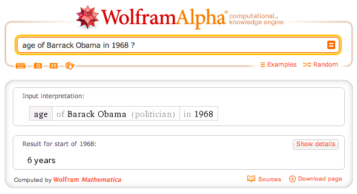
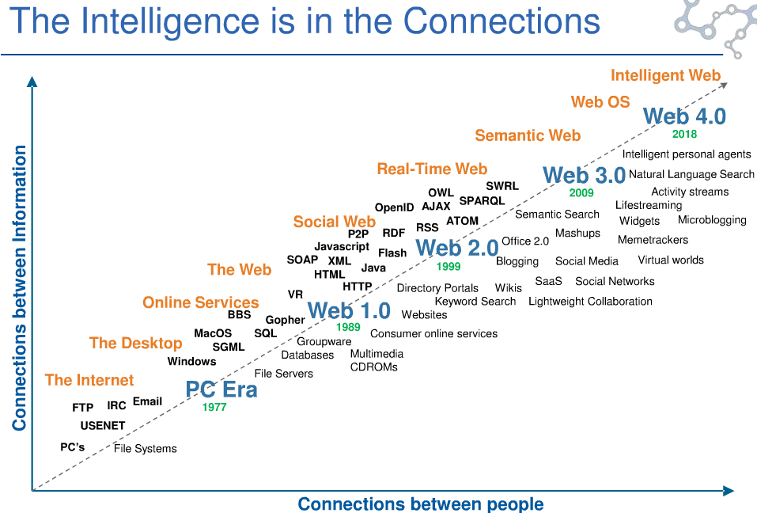

What is Semantic ?
Semantic is about meaning.
to understand Things.
How do we understand ?
> word definition
> syntax analysis
But we are Human !
We understand with social interactions
Experiences
Links
Even between Humans it's diffcult to understand each other.
Because we doesn't have the same experiences, and so the same meaning
So why do you want the Machine to understand us ?
Because we have it everywhere with us
We are connected to 3B peoples.
Our family, our home, our office, our car ...
The most representative Semantic tool we use in mobility is Siri.
a voice recognition that allow Human to ask his phone like a personnal assistant.
Siri use different services, like Wolfarm alpha which is kind of emblematic in the semantic world.

But this is not Semantic Anaylsis
A kind of Academic approach to define new standards for Machine to understand the web.

A simple concept, triplet :
Suject, Predicate, Object
All of this are URI.
Object could also have literate value.
But it is not really Developer Friendly
Anyway the vision is here

Semantic Social Web
Twitter : Hashtags, 140ch constraint
Facebook : Like, Open Graph
Research based on twitter
Predict Dow Jones evolution
Sentiment analysis
Influencer on specific domain
Semantic emerge from Social context
But we are all different
Based on our Social Experiences
Web Semantic will enable us to talk to each Human
by translating our meaning to others